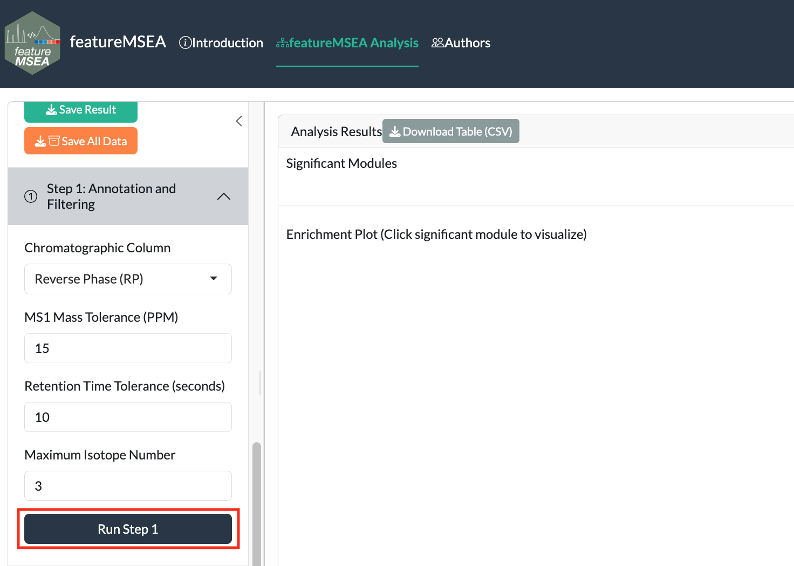
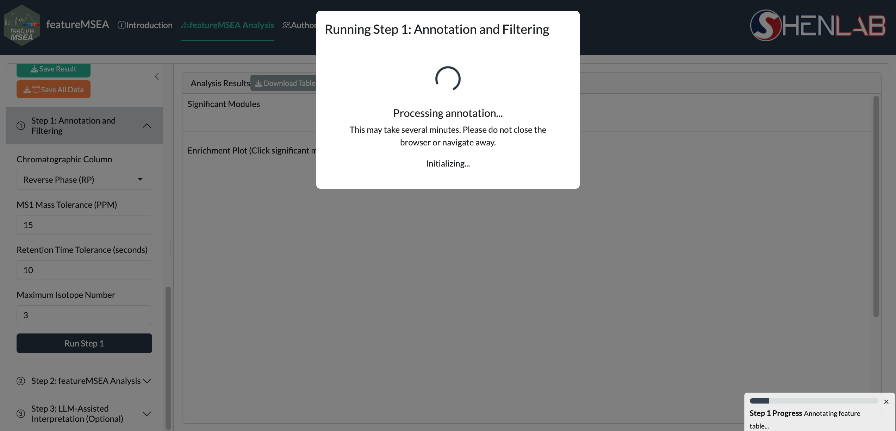

2 Annotation and Filtering
In Step 1, metabolic features are annotated against the MS1 database via accurate mass matching within a user-specified tolerance window. Co-eluting features sharing similar retention times are further grouped into Metabolic Feature Clusters (MFCs), a grouping strategy that improves annotation confidence and reduces redundancy in the resulting annotation table.

Figure 2.1: Step 1: annotation and filtering parameters
2.1 Parameters
| Parameter | Description | Default |
|---|---|---|
Column |
Chromatographic column type | "rp" |
DB Type |
Annotation database | "KEGG" |
MS1 PPM |
Mass accuracy threshold (ppm) | 15 |
RT Tol (s) |
Retention time tolerance for MFC clustering | 10 |
Isotope No. |
Maximum isotopes considered per feature | 3 |
Tip: Use
"rp"(reverse phase) for most lipidomics and general metabolomics experiments. Switch to"hilic"for polar metabolite profiling.
Click Run Step 1. Annotation may take a few minutes depending on feature count.

Figure 2.2: Step 1 running
When complete, a summary of annotated features appears below the parameters panel.